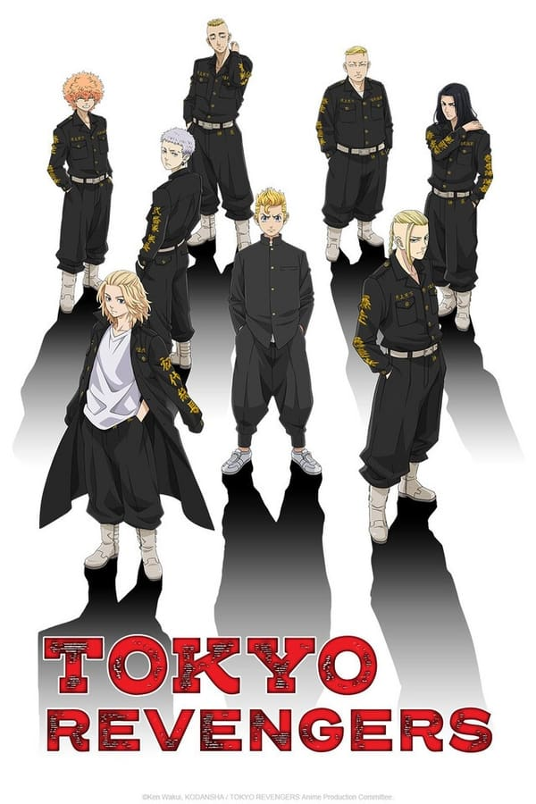

| Anime | Sinopse | Legendado | Dublado |
|---|---|---|---|
|  | A vida de Takemichi Hanagaki está ruim. Quando pensou que não poderia piorar, ele descobre que Hinata Tachibana, sua ex-namorada, foi assassinada pela Gangue Manji de Tóquio: um grupo de criminosos cruéis que vem perturbando a paz da sociedade há algum tempo. Se perguntando onde tudo deu errado, Takemichi de repente se viu viajando no tempo, parando 12 anos no passado, quando ele ainda estava em um relacionamento com Hinata. Percebendo que tem uma chance de salvá-la, Takemichi resolve se infiltrar na Gangue Manji de Tóquio e subir na hierarquia para de reescrever o futuro e salvar Hinata de seu trágico destino. |
Assistir Legendado | Assistir Dublado |
| Comentarios | "Nossa o anime em si é muito bom !" |